수질환경산업기사 (2018-08-19 기출문제)
1과목: 수질오염개론
1. 적조 발생지역과 가장 거리가 먼 것은?
- 정체 수역
- 질소 인 등의 영양염류가 풍부한 수역
- upwelling 현상이 있는 수역
- 갈수기 시 수온, 염분이 급격히 높아진 수역
(정답률: 72%)

2. Ca2+ 이온의 농도가 450mg/L 인 물의 환산경도(mg CaCO3/L)는? (단, Ca 원자량 = 40)
- 1,125
- 1,250
- 1,350
- 1,450
(정답률: 71%)
3. 호소의 부영양화 현상에 관한 설명 중 옳은 것은?
- 부영양화가 진행되면 COD와 투명도가 낮아진다.
- 생물종의 다양성은 증가하고 개체수는 감소한다.
- 부영양화의 마지막 단계에서는 청록조류가 번식한다.
- 표수층에는 산소의 과포화가 일어나고 pH가 감소한다.
(정답률: 63%)
4. 전해질 M2X3의 용해도적 상수에 대한 표현으로 옳은 것은?
- Ksp=[M3+][X2-]
- Ksp=[2M3+][3X2-]
- Ksp=[2M3+]2[3X2-]3
- Ksp=[M3+]2[X2-]3
(정답률: 72%)
5. 지하수의 특징이라 할 수 없는 것은?
- 세균에 의한 유기물 분해가 주된 생물작용이다.
- 자연 및 인위의 국지적인 조건의 영향을 크게 받기 쉽다.
- 분해성 유기물질이 풍부한 토양을 통과하게 되면 물은 유기물의 분해 산물인 탄산가스 등을 용해하여 산성이 된다.
- 비교적 낮은 곳의 지하수일수록 지층과의 접촉시간이 길어 경도가 높다.
(정답률: 66%)
6. 호수가 빈영양 상태에서 부영양 상태로 진행되는 과정에서 동반되는 수환경의 변화가 아닌 것은?
- 심수층의 용존산소량 감소
- pH의 감소
- 어종의 변화
- 질소 및 인과 같은 영양염류의 증가
(정답률: 59%)
7. 해수의 주요 성분(Holy Seven)으로 볼 수 없는 것은?
- 중탄산염
- 마그네슘
- 아연
- 황
(정답률: 75%)
8. 물의 밀도에 대한 설명으로 틀린 것은?
- 물의 밀도는 3.98℃에서 최대값을 나타낸다.
- 해수의 밀도가 담수의 밀도보다 큰 값을 나타낸다.
- 물의 밀도는 3.98℃보다 온도가 상승하거나 하강하면 감소한다.
- 물의 밀도는 비중량을 부피로 나눈 값이다.
(정답률: 80%)
9. 박테리아의 경험적인 화학적 분자식이 C5H7O2N 이면 100g의 박테리아가 산화될 때 소모되는 이론적산소량(g)은? (단, 박테리아의 질소는 암모니아로 전환됨)
- 92
- 101
- 124
- 142
(정답률: 69%)
10. 질소순환과정에서 질산화를 나타내는 반응은?
- N2→NO2-→NO3-
- NO3-→NO2-→N2
- NO3-→NO2-→NH3
- NH3→NO2-→NO3-
(정답률: 80%)
11. 물의 특성으로 가장 거리가 먼 것은?
- 물의 표면장력은 온도가 상승할수록 감소한다.
- 물은 4℃에서 밀도가 가장 크다.
- 물의 여러 가지 특성은 물의 수소결합 때문에 나타난다.
- 융해열과 기화열이 작아 생명체의 열적 안정을 유지할 수 있다.
(정답률: 78%)
12. 0.04N의 초산이 8% 해리되어 있다면 이 수용액의 pH는?
- 2.5
- 2.7
- 3.1
- 3.3
(정답률: 61%)
13. 일반적으로 물속의 용존산소(DO) 농도가 증가하게 되는 경우는?
- 수온이 낮고 기압이 높을 때
- 수온이 낮고 기압이 낮을 때
- 수온이 높고 기압이 높을 때
- 수온이 높고 기압이 낮을 때
(정답률: 82%)
14. 생물학적 오탁지표들에 대한 설명이 바르지 않은 것은?
- BIP(Biological Index of Pollution) : 현미경적인 생물을 대상으로 하여 전생물수에 대한 동물성 생물수의 백분율을 나타낸 것으로, 값이 클수록 오염이 심하다.
- BI(Biotix Index) : 육안적 동물을 대상으로 전생물 수에 대한 청수성 및 광범위하게 출현하는 미생물의 백분율을 나타낸 것으로, 값이 클수록 깨끗한 물로 판정된다.
- TSI(Trophic State Index) : 투명도, 투명도와 클로로필 농도의 상관관계를 이용한 부영양화도 지수를 나타내는 것이다.
- SDI(Species Diversity Indec) : 종의 수와 개체수의 비로 물의 오염도를 나타내는 지표로, 값이 클수록 종의 수는 적고 개체수는 많다.
(정답률: 67%)
15. 음용수를 염소 소독할 때 살균력이 강한 것부터 약한 순서로 나열한 것은?
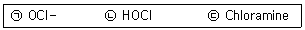
- ㉠→㉡→㉢
- ㉡→㉠→㉢
- ㉢→㉠→㉡
- ㉠→㉢→㉡
(정답률: 80%)
16. 과대한 조류의 발생을 방지하거나 조류를 제거하기 위하여 일반적으로 사용하는 것은?
- E.D.T.A
- NaSO4
- Ca(OH)2
- CuSO4
(정답률: 73%)
17. 1차 반응에서 반응개시의 물질 농도가 220mg/L 이고, 반응 1시간 후에 농도는 94mg/L이었다면 반응 8시간 후의 물질의 농도는?
- 0.12
- 0.25
- 0.36
- 0.48
(정답률: 66%)
18. 0.1M-NaOH의 농도를 mg/L로 나타낸 것은?
- 4
- 40
- 400
- 4,000
(정답률: 69%)
19. 폐수의 BODu가 120mg/L이며, K1(상용대수)값이 0.2/day라면 5일 후 남아 있는 BOD(mg/L)는?
- 10
- 12
- 14
- 16
(정답률: 71%)
20. 조류의 경험적 화학 분자식으로 가장 적절한 것은?
- C4H7O2N
- C5H8O2N
- C6H9O2N
- C7H10O2N
(정답률: 73%)
2과목: 수질오염방지기술
21. 100m3/day로 유입되는 도금폐수이 CN농도가 200mg/L이었다. 폐수를 알칼리 염소법으로 처리하고자 할 때 요구되는 이론적인 염소의 양(kg/day)은? (단, 2CN-+5Cl2+4H2O→2CO2+N2+8HCl-+2Cl-, Cl2 분자량 = 71)
- 136.5
- 142.3
- 168.2
- 204.8
(정답률: 50%)
22. 교반장치의 설계와 운전에 사용되는 속도경사의 차원을 나타낸 것으로 옳은 것은?
- [LT]
- [LT-1]
- [T-1]
- [L-1]
(정답률: 66%)
23. 하나의 반응탱크 안에서 시차를 두고 유입, 반송, 침전, 유출 등의 각 과정을 거치도록 되어있는 생물학적 고도처리 공정은?
- SBR
- UCT
- A/O
- A2/O
(정답률: 72%)
24. 소규모 하ㆍ폐수처리에 적합한 접촉산화법의 특징으로 틀린 것은?
- 반송 슬러지가 필요하지 않으므로 운전관리가 용이하다.
- 부착 생물량을 임의로 조정할 수 없기 때문에 조작 조건의 변경에 대응하기 어렵다.
- 반응조 내 매체를 균일하게 포기 교반하는 조건 설정이 어렵다.
- 비표면적이 큰 접촉재를 사용하여 부착 생물량을 다량으로 보유할 수 있기 때문에 유입기질의 변동에 유연히 대응할 수 있다.
(정답률: 54%)
25. 물리, 화학적 질소제거 공정 중 이온교환에 관한 설명으로 틀린 것은?
- 생물학적 처리 유출수 내의 유기물이 수지의 접착을 야기한다.
- 고농도의 기타 양이온이 암모니아 제거능력을 증가시킨다.
- 재사용 가능한 물질(암모니아 용액)이 생산된다.
- 부유물질 축적에 의한 과다한 수두손실을 방지하기 위하여 여과에 의한 전처리가 일반적으로 필요하다.
(정답률: 46%)
26. 폐수의 생물학적 질산화 반응에 관한 설명으로 틀린 것은?
- 질산화 반응에는 유기 탄소원이 필요하다.
- 암모니아성 질소에서 아질산성 질소로의 산화반응에 관여하는 미생물은 Nitrosomonas이다.
- 질산화 반응은 온도 의존적이다.
- 질산화 반응은 호기성 폐수처리 시 진행된다.
(정답률: 42%)
27. 27mg/L의 암모늄이온(NH4+)을 함유하고 있는 페수를 이온교환수지로 처리하고자 한다. 1667m3의 폐수를 처리하기 위해 필요한 양이온 교환수지의 용적(m3)은? (단, 양이온 교환수지의 처리능력 100,000g CaCO3/m3, Ca 원자량 = 40)
- 0.60
- 0.85
- 1.25
- 1.50
(정답률: 57%)
28. 일반적인 슬러지처리 공정의 순서로 옳은 것은?
- 안정화→개량→농축→탈수→소각
- 농축→안정화→개량→탈수→소각
- 개량→농축→안정화→탈수→소각
- 탈수→개량→안정화→농축→ 소각
(정답률: 73%)
29. 염소이온 농도가 5,000mg/L인 분뇨를 처리한 결과 80%의 염소이온 농도가 제거되었다. 이 처리수에 희석수를 첨가하여 처리한 결과 염소이온 농도가 200mg/L이 되었다면 이 때 사용한 희석배수(배)는?
- 2
- 5
- 20
- 25
(정답률: 58%)
30. 정상상태로 운전되는 포기조의 용존산소 농도 3mg/L, 용존산소 포화농도 8mg/L, 포기조 내 측정된 산소전달속도(γo2) 40mg/Lㆍhr일 때 총괄 산소전달계수(KLa, hr-1)는?
- 6
- 8
- 10
- 12
(정답률: 57%)
31. 2차 처리수 중에 함유된 질소, 인 등의 영양염류는 방류수역의 부영양화의 원인이 된다. 폐수 중의 인을 제거하기 위한 처리방법으로 가장 거리가 먼 것은?
- 황산반토(Alum)에 의한 응집
- 석회를 투입하여 아파타이트 형태로 고정
- 생물학적 탈인
- Air stripping
(정답률: 64%)
32. 생물학적 회전원판법(RBC)에서 지름이 2.6m이며 600매로 구성되었고, 유입수량 1,000m3/day, COD 200mg/L인 경우 BOD부하(g/m2ㆍday)는? (단, 회전원판은 양면사용 기준)
- 23.6
- 31.4
- 47.2
- 51.6
(정답률: 63%)
33. BOD 150mg/L, 유량 1,000m3/day인 폐수를 250m3의 유효용적을 가진 포기조로 처리할 경우 BOD 용적부하(kg/m3ㆍday)는?
- 0.2
- 0.4
- 0.6
- 0.8
(정답률: 65%)
34. 클로이드 평형을 이루는 힘인 인력과 반발력 중에서 반발력의 주요 원인이 되는 것은?
- 제타 포텐셜
- 중력
- 반데르 발스 힘
- 표면장력
(정답률: 73%)
35. 2.5mg/L의 6가 크롬이 함유되어 있는 폐수를 황산제일철(FeSO4)로 환원처리 하고자 한다. 이론적으로 필요한 황산제일철의 농도(mg/L)는? (단, 산화한원 반응 : Na2CrO7+6FeSO4+7H2SO4→Cr2(SO4)3+3Fe2(SO4)3+7H2O+Na2SO4, 원자량 : S=32, Fe=56, Cr=52)(오류 신고가 접수된 문제입니다. 반드시 정답과 해설을 확인하시기 바랍니다.)
- 11.0
- 16.4
- 21.9
- 43.8
(정답률: 46%)
36. 5% Alum을 사용하여 Jar Test한 최적결과가 다음과 같다면 Alum의 최적주입농도(mg/L)는? (단, 5% Alum의 비중=1.0Alum 주입량=3mL, 시료량=500mL)
- 300
- 400
- 600
- 900
(정답률: 46%)
37. 고형물의 농도가 15%인 슬러지 100kg을 건조상에서 건조시킨 후 수분이 20%로 되었다. 제거된 수분의 양(kg)은? (단, 슬러지 비중 1.0)
- 약 54.2
- 약 65.3
- 약 72.6
- 약 81.3
(정답률: 54%)
38. 유입하수량이 20,000m3/day, 유입 BOD가 200mg/L, 폭기조 용량 1,000m3, 폭기조 내 MLSS가 1,750mg/L, BOD 제거율 90%, BOD의 세포 합성률 0.55, 슬러지의 자산화율 0.08day-1일 때 잉여슬러지 발생량(kg/day)은?
- 1,680
- 1,720
- 1,840
- 1,920
(정답률: 50%)
39. 생물막을 이용한 처리공법 중 접촉산화법의 장점으로 틀린 것은?
- 분해속도가 낮은 기질제거에 효과적이다.
- 부하, 수량변동에 대하여 완충능력이 있다.
- 슬러지 반송이 필요 없고 슬러지 발생량이 적다.
- 고부하에 따른 공극 폐쇄위험이 적다.
(정답률: 60%)
40. 일반적으로 분류식 하수관거로 유입되는 물의 종류와 가장 거리가 먼 것은?
- 가정하수
- 산업폐수
- 우수
- 침투수
(정답률: 61%)
3과목: 수질오염공정시험방법
41. 다음의 경도와 관련된 설명으로 옳은 것은?
- 경도를 구성하는 물질은 Ca2+, Mg2+, K+, Na+등이 있다.
- 150mg/L as CaCO3 이하를 나타낼 경우 연수라고 한다.
- 경도가 증가하면 세제효과를 증가시켜 세제의 소모가 감소한다.
- Ca2+, Mg2+등이 알칼리도를 이루는 탄산염, 중탄산염과 결합하여 존재하면 이를 탄산경도라 한다.
(정답률: 58%)
42. 시료ㅐ위량 기준에 관한 내용으로 ()안에 들어갈 내용으로 적합한 것은?
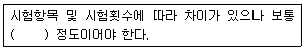
- 1~2L
- 3~5L
- 5~7L
- 8~10L
(정답률: 76%)
43. 시료채취 시 유의사항으로 옳지 않은 것은?
- 휘발성유기화합물 분석용 시료를 채취할 때에는 뚜껑의 격막을 만지지 않도록 주의하여야 한다.
- 환원성 물질 분석용 시료의 채취병을 뒤집어 공기방울이 확인되면 다시 채취하여야 한다.
- 천부층 지하수의 시료채취 시 고속양수펌프를 이용하여 신속히 시료를 채취하여 시료 영향을 최소화한다.
- 시료채취시에 시료채취시간, 보존제 사용여부, 매질 등 분석결과에 영향을 미칠 수 있는 사항을 기재하여 분석자가 참조할 수 있도록 한다.
(정답률: 66%)
44. 탁도 측정 시 사용되는 탁도계의 설명으로 ()에 들어갈 내용으로 적합한 것은?
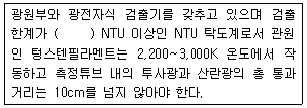
- 0.01
- 0.02
- 0.⑤
- 0.1
(정답률: 52%)
45. 자외선/가시선 분광법을 이용한 카드뮴 측정 방법에 대한 설명으로 ()에 들어갈 내용으로 적합한 것은?
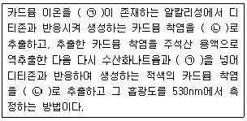
- ㉠ : 시안화칼륨, ㉡ : 클로로폼
- ㉠ : 시안화칼륨, ㉡ : 사염화탄소
- ㉠ : 디메글리옥심, ㉡ : 클로로폼
- ㉠ : 디메글리옥심, ㉡ : 사염화탄소
(정답률: 68%)
46. 다음은 자외선/가시선 분광법을 적용한 불소 측정 방법이다. ()안에 옳은 내용은?
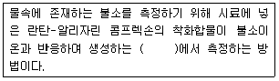
- 적색의 복합 착화합물의 흡광도를 560nm
- 청색의 복합 착화합물의 흡광도를 620nm
- 황갈색의 복합 착화합물의 흡광도를 460nm
- 적자색의 복합 착화합물의 흡광도를 520nm
(정답률: 61%)
47. 유도결합플라즈마-원자발광분광법에 의해 측정이 불가능한 물질은?
- 염소
- 비소
- 망간
- 철
(정답률: 50%)
48. 비소표준원액(1mg/mL)을 100mL 조제하려면 삼산화비소(As2O3)의 채취량은? (단, 비소의 원자량은 74.92이다.)
- 37mg
- 74mg
- 132mg
- 264mg
(정답률: 45%)
49. 다음 실험에서 종말점 색깔을 잘못 나타낸 것은?
- 용존산소-무색
- 염소이온-엷은 적황색
- 산성 100℃ 과망간산칼륨에 의한 COD-엷은 홍색
- 노말헥산추출물질-적색
(정답률: 56%)
50. 수용액의 pH측정에 관한 설명으로 틀린 것은?
- pH는 수소이온 농도 역수의 상용대수값이다.
- pH는 기준전극과 비교전극의 양전극간에 생성되는 기전력의 차를 이용하여 구한다.
- 시료의 온도와 표준액의 온도차는 ±5℃ 이내로 맞춘다.
- pH 10 이상에서 나트륨에 의해 오차가 발생할 수 있는데 이는 “낮은 나트륨 오차 전극”을 사용하려 줄일 수 있다.
(정답률: 51%)
51. 수질오염공정시험기준에서 총대장균군의 시험방법이 아닌 것은?
- 막여과법
- 시험관법
- 균군계수 시험법
- 평판집략법
(정답률: 67%)
52. 수질측정 항목과 최대보존기간을 짝지은 것으로 잘못 연결된 것은? (단, 항목-최대보존기간)
- 색도-48시간
- 6가 크롬-24시간
- 비소-6개월
- 유기인-28일
(정답률: 63%)
53. 납(Pb)의 정량방법 중 자외선/가시선 분광법에 사용되는 시약이 아닌 것은?
- 에틸렌디아민용액
- 사이트르산이암모늄용액
- 암모니아수
- 시안화칼륨용액
(정답률: 42%)
54. 용어에 관한 설명 중 틀린 것은?
- “방울수”라 함은 15℃에서 정제수 20방울을 적하할 때 그 부피가 약 10mL가 되는 것을 뜻한다.
- “약”이라 함은 기재된 양에 대하여 ±10% 이상 차가 있어서는 안된다.
- 무게를 “정밀히 단다”라 함은 규정된 수치의 무게를 0.1mg까지 다는 것을 망한다.
- “항량으로 될 때까지 건조한다”라 함은 같은 조건에서 1시간 더 건조할 때 전후 무게차가 g당 0.3mg이하일 때를 말한다.
(정답률: 73%)
55. 그림과 같은 개수로(수로의 구성재질과 수로 단면의 형상이 일정하고 수로의 길이가 적어도 10m까지 똑바른 경우)가 있다. 수심 1m, 수로폭 2m, 수면경사 1/1,000인 수로의 평균 유속(C(Ri)0.5]을 케이지(Chezy)의 유속공식으로 계산하였을 유량(m3/mim)은? (단, Bazin의 유속계수
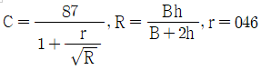
이다.)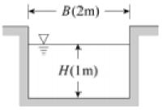
- 102
- 122
- 142
- 162
(정답률: 48%)
56. 유도결합플라스마 발광광도계의 조작법 중 설정조건에 대한 설명으로 틀린 것은?
- 고주파출력은 수용액 시료의 경우 0.8~1.4kW, 유기용매시료의 경우 1.5~2.5kEW로 성정한다.
- 가스유량은 일반적으로 냉각가스 20~18L/,min, 보조 가스 5~10L/min 범위이다.
- 분석선(파장)의 실정은 일반적으로 가장 감도가 높은 파장을 설정한다.
- 플라스마 발광부 관측 높이는 유도코일 상단으로부터 15~18mm 범위에 측정하는 것이 보통히다/
(정답률: 56%)
57. 수중의 용존산소와 관련된 설명으로 틀린 것은?
- 하천의 DO가 높을 경우 하천의 오염정도는 낮다.
- 수중의 DO는 온도가 낮을수록 감소한다.
- 수중에 DO는 가해지는 압력이 클수록 증가한다.
- 용존산소의 20℃ 포화농도는 9.17 ppm이다.
(정답률: 70%)
58. 배출허용기준 적합여부 판정을 위한 복수시료 채취방법에 대한 기준으로 ()에 알맞은 것은?
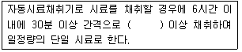
- 1회
- 2회
- 4회
- 8회
(정답률: 75%)
59. 이온크로마토그래프로 분석할 때 머무름 시간이 같은 물질이 존재할 경우 방해를 줄일 수 있는 방법으로 틀린 것은?
- 컴럼 교체
- 시료 희석
- 용리액조성 변경
- 0.2μm 막 여과지로 여과
(정답률: 61%)
60. 원자흡수분광광도법의 원소와 불꽃연료가 잘못 짝지어진 것은?
- 구리 : 공기-아세틸렌
- 바륨 : 아산화질소-아세틸렌
- 비소 : 냉중기
- 망간 : 공기-아세틸렌
(정답률: 55%)
4과목: 수질환경관계법규
61. 수질오염 방지시설 중 화학적 처리 시설이 아닌 것은?
- 침전물 개량시설
- 응집시설
- 살균시설
- 소각시설
(정답률: 55%)
62. 배수설비의 설치방법ㆍ구조기준 중 기준 배수관의 맨홀 설치기준에 해당하는 것으로 ()에 옳은 것은?
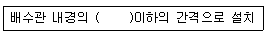
- 100배
- 120배
- 150배
- 200배
(정답률: 56%)
63. 대권역별 물환경관리계획에 포함되어야 하는 사항이 아닌 것은?
- 물환경의 변화 추이 및 물환경목표기준
- 점오염원, 비점오염원 및 기타 수질오염원의 분포현황
- 물환경 보전 및 관리체계
- 수질오염 예방 및 저감 대책
(정답률: 38%)
64. 폐수처리업자의 준수사항에 관한 설명으로 ()에 옳은 것은?
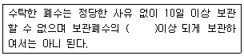
- 60%
- 70%
- 80%
- 90%
(정답률: 62%)
65. 사업장 규모를 구분하는 폐수배출량에 관한 사항으로 알맞지 않은 것은?
- 사업장의 규모별 구분은 연중 평균치를 기준으로 정한다.
- 최초 배출시설 설치허가시의 폐수배출량은 사업계획에 따른 예상용수사용량을 기준으로 선정한다.
- 용수사용량에는 수돗물, 공업용수, 지하수, 하천 및 해수 등 그 사업장에서 사용하는 모든 물을 포함한다.
- 생산 공정 중 또는 방지시설의 최종 방류구에서 방류되기 전에 일정관로를 통해 생산 공정에 재이용 물은 용수사용량에서 제외한다.
(정답률: 53%)
66. 환경기준에서 하천의 생활환경 기준에 해당되지 않는 항목은?
- DO
- SS
- T-N
- pH
(정답률: 61%)
67. 물환경보전법상 100만원 이하의 벌금에 해당되는 경우는?
- 환경관리인의 요청을 정당한 사유 없이 거부한 자
- 배출시설 등의 운영사항에 관한 기록을 보존하지 아니한 자
- 배출시설 등의 운영사항에 관한 기록을 허위로 기록한 자
- 환경관리인 등의 교육을 박게 하지 아니한 자
(정답률: 52%)
68. 환경정책기본법령에서 수질 및 수생태계 환경기준으로 하천에서 사람의 건강보호기준이 다른 수질오염물질은?
- 납
- 비소
- 카드뮴
- 6가 크롬
(정답률: 55%)
69. 골프장 안의 잔디 및 수목 등에 맹ㆍ고독성 농약을 사용한 자에 대한 벌칙기준으로 적절한 것은?
- 100만원 이하의 과태료
- 1천만원 이하의 과태료
- 1년 이하의 징역 또는 1천만원 이하의 벌금
- 3년 이하의 징역 또는 3천만원 이하의 벌금
(정답률: 54%)
70. 환경부장관이 비점오염원관리지역을 수립 시 포함되어야 하는 사항이 아닌 것은?
- 관리목표
- 관리대상 수질오염물질의 종류 및 발생량
- 관리대상 수질오염물질의 발생 예방 및 저감방안
- 적정한 관리를 위하여 대통령령으로 정하는 사항
(정답률: 61%)
71. 측정망 설치계획에 포함되어야 하는 사항이라 볼 수 없는 것은?
- 측정망 설치시기
- 측정오염물질 및 측정농도 범위
- 측정망 배치도
- 측정망을 설치할 토지 또는 건축물의 위치 및 면적
(정답률: 48%)
72. 시ㆍ도지사가 희석하여야만 수질오염물질의 처리가 가능하다고 인정할 수 없는 경우는?
- 폐수의 염분 농도가 높아 원래의 상태로는 생물화학적 처리가 어려운 경우
- 폐수의 유기물의 농도가 높아 원래의 상태로는 생물화학적 처리가 어려운 경우
- 폐수의 중금속 농도가 높아 원래의 상태로는 생물화학적 처리가 어려운 경우
- 폭발의 위험 등이 있어 원래의 상태로는 생물화학적 처리가 어려운 경우
(정답률: 68%)
73. 환경기술인을 두어야 할 사업장의 범위 및 환경 기술인의 자격기준을 정하는 주체는?
- 환경부장관
- 대통령
- 사업주
- 시ㆍ도지사
(정답률: 55%)
74. 물환경보전법에서 사용하는 용어의 정의로 틀린 것은?
- 폐수 : 물에 액체성 또는 고체성의 수질오염물질이 섞여 있어 그대로는 사용할 수 없는 물을 말한다.
- 강우유출량 : 불특정장소에서 불특정하게 유출되는 빗물 또는 눈 녹은 물 등을 말한다.
- 공공수역 : 하천, 호소, 항만, 연안해역, 그 밖에 공공용으로 사용되는 수역과 이에 접속하여 공공용으로 사용되는 환경부령으로 정하는 수로를 말한다.
- 불투수층 : 빗물 또는 눈 녹은 물 등이 지하로 스며들 수 없게 하는 아스팔트ㆍ콘크리트 등으로 포장된 도로, 주차장, 보도 등을 말한다.
(정답률: 67%)
75. 오염총량관리기본방침에 포함되어야 하는 사항으로 틀린 것은?
- 오염원의 조사 및 오염부하량 산정방법
- 총량관리 단위유역의 자연 지리적 오염원 현황과 전망
- 오염총량관리의 대상 수질오염물질 종류
- 오염총량관리의 목표
(정답률: 57%)
76. 다음 설명에 해당하는 환경부령이 절하는 비점오염 관련 관계전문기관으로 옳은 것은?
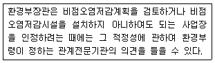
- 국립환경과학원
- 한국환경정책ㆍ평가연구원
- 한국환경기술개발원
- 한국건설기술연구원
(정답률: 61%)
77. 시장ㆍ군수ㆍ구청장이 낚시금지구역 또는 낚시제한구역을 지정하려 할 때 고려하여야 할 사항으로 틀린 것은?
- 지정의 목적
- 오염원 현황
- 수질오염도
- 연도별 낚시 인구의 현황
(정답률: 50%)
78. 위임업무보고사항 중 배출부과금 부과실적 보고 횟수로 적절한 것은?
- 연 2회
- 연 4회
- 연 6회
- 연 12회
(정답률: 64%)
79. 1일 폐수 배출량이 500m3인 사업장은 몇 종 사업장에 해당 되는가?
- 제 2종 사업장
- 제 3종 사업장
- 제 4종 사업장
- 제 5종 사업장
(정답률: 73%)
80. 기본배출부과금은 오염물질배출량과 배출농도를 기준으로 산식에 따라 산정하는데, 기본부과금 산정에 필요한 사업장별 부과계수가 틀린 것은?
- 제 1종 사업장(10,000m3/일 이상) : 1.8
- 제 2종 사업장 : 1.4
- 제 3종 사업장 : 1.2
- 제 4종 사업장 : 1.1
(정답률: 50%)